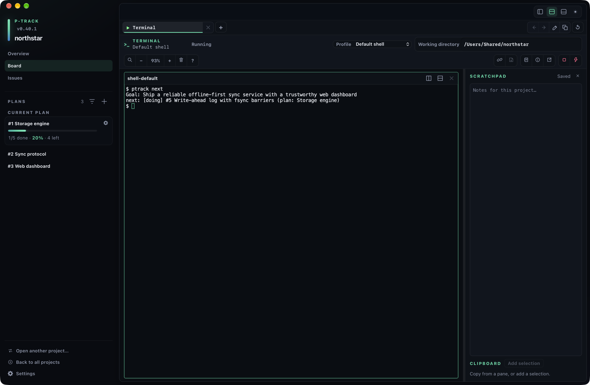
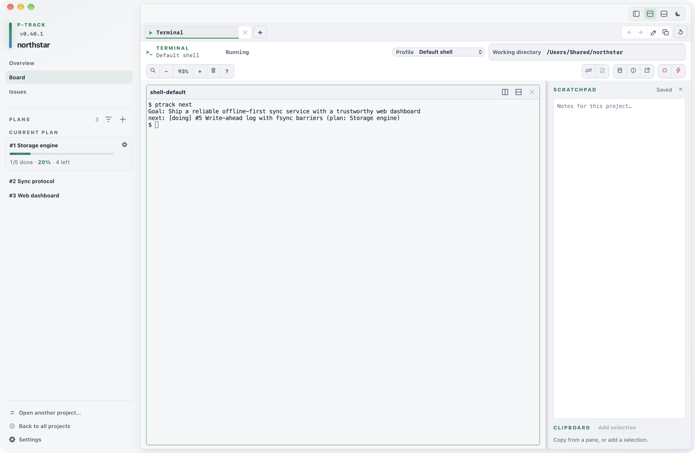

Terminal workspace
Run multiple terminal sessions safely
Keep independent shells and installed agents available in tabs and splits, while p-track persists only bounded layout descriptors—not terminal contents or runtime authority.


Sessions and tabs
Open the terminal dock from a project workspace, choose a profile and working directory, then open the stopped pane. Each pane receives its own PTY-backed session. Closing a pane stops its owned process; an exited pane remains visible when its profile uses the keep exit behavior.
Create, select, reorder, duplicate, rename, and close tabs from the tab row. Keyboard users can focus a tab and press F2 to begin renaming, Enter to save a non-empty name, or Escape to cancel. Arrow keys move focus between tabs; Home and End reach the first and last tab.
Persistence is intentionally content-free. p-track stores tab titles, active panes, split layout, profile IDs, requested working directories, and bounded plan/task pointers. It never persists terminal output, scrollback contents, session IDs, stream URLs, tokens, environment values, or other runtime authority.
After an app restart or project reopen, saved descriptors return as stopped panes. Opening one creates a fresh session; it does not restore the prior shell process or terminal contents.
Splits and limits
Split the active pane horizontally or vertically and resize a split with its separator. p-track clamps split ratios from 0.1 through 0.9, so neither side can consume the entire split.
| Workspace bound | Limit |
|---|---|
| Tabs per project workspace | 12 |
| Terminal panes per tab | 8 |
| Nested pane depth | 6 |
| Split ratio | 0.1–0.9 |
Controls stop offering additions at these limits. If saved layout data is malformed or outside its bounds, p-track discards it instead of turning it into a live session.
Search, copy, paste, and zoom
Search the active pane's scrollback, move through matches, and close search without stopping the session. Copy uses the native clipboard. A selection-aware Ctrl+C copies when text is selected; without a selection it remains terminal interrupt input.
| Action | macOS | Windows and Linux implementation |
|---|---|---|
| Search output | ⌘+F | Ctrl+Shift+F |
| Copy selection | ⌘+C | Ctrl+Shift+C |
| Paste | ⌘+V | Ctrl+V or Shift+Insert |
| Select all | ⌘+A | Ctrl+Shift+A |
| Zoom in, out, reset | ⌘ with +, −, 0 | Ctrl with +, −, 0 |
| Open context menu | Menu or Shift+F10; right-click also opens it | |
The context menu exposes copy, paste, select all, output search, clear buffer, and terminal-state reset. Toolbar controls offer the same search and zoom behaviors without requiring shortcuts.
Review multiline paste
In the ordinary terminal screen, pasting text that contains a newline opens a bounded review dialog. Inspect the normalized preview and line count, then confirm or cancel. Cancel sends nothing. Confirm delegates the complete text to xterm's paste behavior, including bracketed paste when the running program enables it.
Alternate-screen applications bypass the review dialog. When a full-screen terminal program such as an editor has activated the alternate screen, p-track sends paste through the terminal's normal paste path so the application can handle it. Review clipboard content before pasting there.
Profiles and exit behavior
The default profile uses 25,000 lines of scrollback. A version-1 profile configuration can select a requested, project-root, or fixed working-directory policy; choose a theme and font family; set non-secret environment overrides; and set an exit behavior.
- Font size is bounded from 10 through 24 pixels. Toolbar zoom is remembered per profile.
- Scrollback is bounded from 100 through 100,000 lines.
keepleaves an exited pane visible;close-on-successcloses only after a successful exit;closecloses after any exit.- Automatic process restart is not an exit policy. Starting again always creates fresh runtime authority.
Profile files must not be used as credential stores. p-track rejects credential-like and reserved environment names; keep credentials in the launched tool's native credential store.
Associations and write-back
Link terminal context associates the active tab with a plan or task after host validation. The pointer helps p-track correlate the terminal with project work; it does not grant a capability or capture terminal contents.
Write memory back is available only for an associated live session. You enter the bounded summary, decision, blocker, or handoff yourself, preview its authoritative destination, and then save it. p-track does not extract text from terminal output.
Diagnostics and recovery
Exited sessions show their status. For an ordinary shell pane, Restart terminal closes the failed or exited session before opening a fresh one. A linked-agent pane cannot use ordinary restart: launch that agent again from its associated plan or task so p-track can mint and bind fresh authority.
Diagnostics are content-free. They report only process, stream, renderer, layout, update time, and bounded retry or repair counts. They never include terminal output, commands, clipboard text, environment values, credentials, or stream URLs.
- Retry terminal renderer rebuilds the selected visible renderer without restarting its PTY. WebGL recovery is bounded and falls back to the built-in renderer.
- Force stop terminal requires confirmation and targets only the selected current session.
- Reset terminal workspace replaces the project's saved terminal layout. Confirming it terminates every live session represented by that workspace before creating a fresh stopped layout.
Platform qualification: clipboard, shortcuts, context menus, restart, and shutdown interactions have been verified end to end on macOS. Windows and Linux include native implementations, but this Help Center does not claim those interactive paths as verified passes.